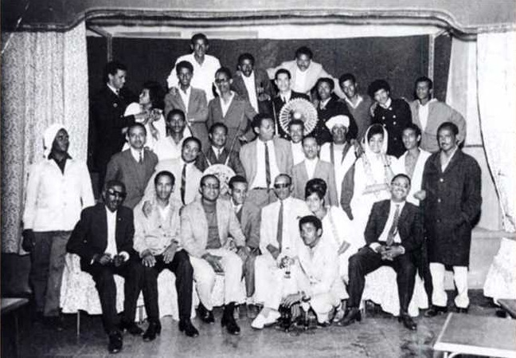
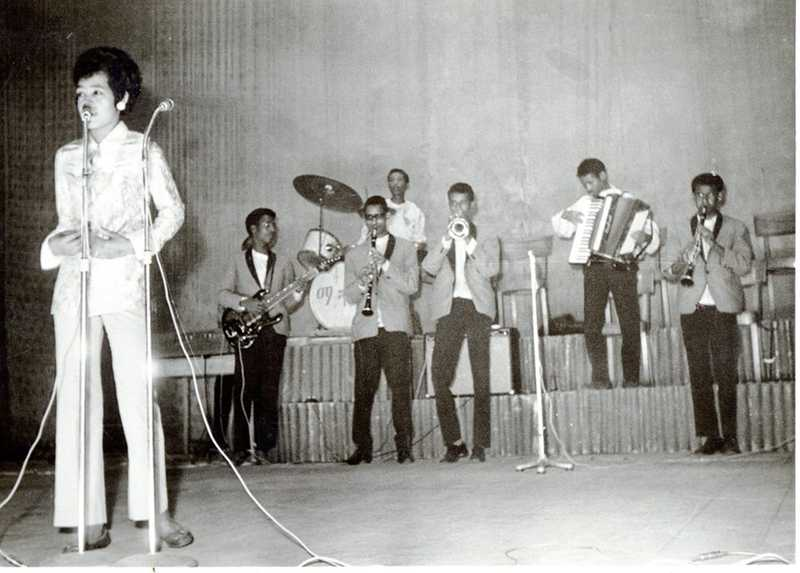
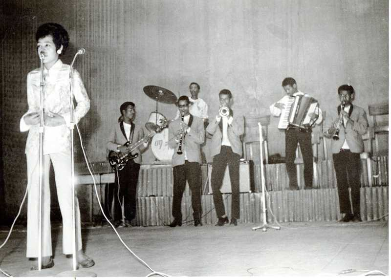

about us
Ato Ateweberhan segid,Osman Abdurahim and Alamin Abdeletif are just three of the many great singers of all time, of Eritrea.Along with many others,these stars were joined together through the common cause of unifying Eritrea (during the time of the war for Independence)in the (Asmarea Theater Association)also famously known as"MATA"here,many singers pushed for cultural unification amongst Eritrean,as well asusing music to boost the morals of the people during this long period of hardship.
Thise organization of talented musician also did a great job including female in this push for Eritrean national identity throuh music,inciuding the famous Teberh Tesfahuney
Alemeyahu Kasahai.is described as the father of modern theater in Eritrea for Eritreans.before the 1940's all plays were catered to the accupying of italians,not the native Eitreans,Kasahai went on to creat Mahber Theater (Indigenous Theater)in the mid 1940's and began teaching shakespeare and putting on plays for the native Eritreans for the first time,while under British control.the play strarted with mixed messages and both slapstick humer /serious discussions.Women were introduced into theater more reluctantly than in the music world.MATA(Asmara Thatre Association)was created in 1961 until its end in1974.with Haile Selassie attempting to keep Eritrea under close watch hemade sure all of the scripts were read by Ethiopia's to make sure there were no hidden political agendas.This did not stop the Eritrean's from pushing coded messagesin support of liberation and a free nation of Eritrea.Whan the Derg took over,their ruthless war tactics terrorized (than called) cinema asmara,at one point thay stormed aplay of 2,000 people and one playwright was said to have beer shot 24 times and left for dead by Ethiopian soldiers as the derg did not approve of what was going on in the Theater in terms of catering to the eitrean people.
The stories of/history of Mahber/Asmarea Theatre/Cinema Asmarea present the visual and lyrical/audible artistic talent of the Eritrean people from befor and during the time of war.as well as the determination by the Eritrea people to create an environmental that would promot national pride,strength and willpower all things that drove and boosted the morale of soidiers and civilaines in their fight for freedom.
 


| Mahber Theater Asmara | ||
|---|---|---|
| Artist | Song Title | song |
| Osman Abdulrahim | ተፈትዊ ቖጽሊ | |
| Teberh Tesfahuney | አቲ ገዛና ዓቢ ህድሞ፥ ትካን ቑንጪ መሊኦሞ | |
| Tewelde Redda | ሽገይ ሃቡኒ | |
| Atewebrhan Segid | ዓደየ ዓደየ ፥ ብዓል መን አዮም ዝጠለሙ | |